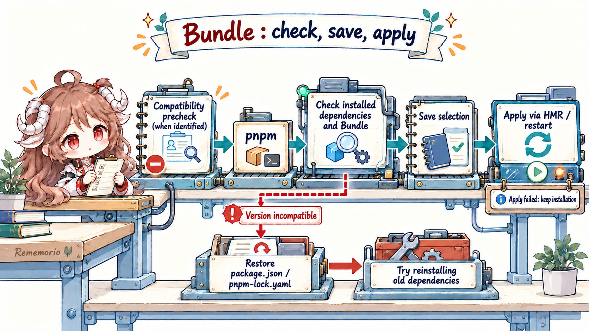
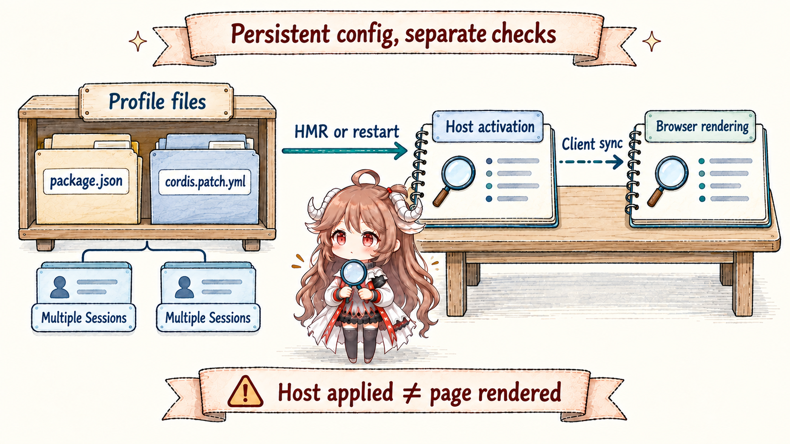

Suppose you want a team status panel inside DSH. The agent first needs to discover where UI can appear and which Services expose the data, then package ordinary plugin code. The hard questions arrive after installation: which sessions change, what survives restart, when saved configuration becomes usable, and which files remain after failure.
Reading contract.Follow that panel through inspection, installation, enablement, and removal. You should be able to distinguish two read-only Inspect tools from the eight plugin_manager actions, connect a Bundle and profile configuration to running Fibers, and read changed separately from application and independently verify page behavior.
Evidence boundary.This chapter is pinned to 687f282. Current tool registration exposes only cordis_inspect_list and cordis_inspect_query; Creator makes persistent changes through Plugin Manager. Dynamic Host/Client runners retain define/run/stop/undefine for programmatic callers and browser controls.
1. Read real interfaces before writing a plugin
1.1 Inspect exposes interface and configuration contracts
cordis_inspect_list returns Provider manifests. Host catalogs include Service, Event, Config, and Tool; Client mirrors include Service, Event, Builtin, Slots, and Theme. Each Provider declares read-only methods and input/output JSON Schemas. The panel author selects real names from that directory before requesting exact signatures.
The platform, provider, and method for cordis_inspect_query come from the directory. Host queries run locally; Client queries await the first valid page response. A Gateway that already knows no Client is online rejects immediately. After dispatch, the Host runner's configured timeout applies, with a default of 10 seconds. Invalid responses and page errors retain diagnostics while another page can still answer before the deadline. Disconnection keeps the original deadline; reconnecting requires a new query. Cancellation ends the wait.
Without an entry, Host Config.listConfigs pages through live profile Loader entries, returning tree-qualified ids, tree-local patchIds, package names, and schema status. An exact entry returns its JSON Schema, a package directory when resolvable, and limitations. Statuses distinguish absent, unsupported, tree, and inactive schemas. Queries read existing schemas without executing validator/transform callbacks; detached runtime trees created by Agent presets require another observation path. Host providers mount once per process, and session Inspect tools read that shared directory.
For the status panel, browse the compact Slots tree without a root, then request an exact Slot root for its complete registration requirements. An exact Factory root instead returns identity, scope, and registrant; it must not be mistaken for an ordinary Slot's complete props. Query the required Service and Theme next. These read-only queries provide the contracts the implementation needs.
1.2 The current entry point is an ordinary Bundle
A Bundle is a package declaring dsh.bundle.patch, which accepts one YAML path or an ordered array of paths that insert or override Loader entries in sequence. It is distinct from a process-local dynamic Package. One lives in ordinary files and package dependencies; the other lives in a runner's in-memory Registry. Current Creator places Inspect and Plugin Manager in the same Agent preset, allowing inspection, package authoring, and installation into the current profile.
This minimal Bundle declaration is illustrative. It omits the panel's Host/Client implementations and Client packaging metadata: it connects configuration to a package; rendering still requires the Host/Client implementation.
{
"name": "@example/status-panel",
"version": "1.0.0",
"type": "module",
"exports": { ".": "./index.js" },
"dsh": { "bundle": { "patch": "./cordis.patch.yml" } }
}- insert:
- id: status-panel
name: '@example/status-panel'Installation verifies Bundle metadata and parses its patch before selecting the package in the profile. A configuration-only Bundle can also insert an existing plugin such as an MCP client; configuration does not always require new Host executable code.
2. Persistent management widens the scope of permission
2.1 Eight actions operate on different objects
plugin_manager exposes the service used by the Web management page. Read lists for exact identifiers before selecting plugin toggles, Bundle management, or version exemptions:
| Action | Object and effect | What remains |
|---|---|---|
list_plugins / list_bundles | Read paginated profile inventory and exact identifiers. | No configuration mutation; the same tool permission check still applies. |
set_plugin | Change disabled in the last matching profile override, or append one. | Other fields and the installed package remain; redundant disabled-only overrides are removed when inherited state already matches. |
set_bundle | Edit ordered dsh.profile.bundles; re-enabling appends at the end. | Disabling retains the dependency; precedence may change. |
install_bundle | Install and validate a Bundle, then enable it by default. | A successful installation survives later enablement failure. |
remove_bundle | Deselect, unload runtime contributions, then run pnpm remove. | Failure preserves completed steps and remaining state without re-enabling. |
list_version_exemptions | Read exact profile exemptions and parsing warnings. | A rejected record leaves other valid records available. |
set_version_exemption | Grant or revoke one exact plugin/runtime version pair and reevaluate live entries. | Granting requires acceptRisk: true; records live in separate compatibility.json. |
To suspend the status panel, use set_bundle with enabled: false; the dependency remains installed. Use set_plugin to disable one individually addressable entry. The manager protects its own essential components and does not edit composition inside an Agent preset. Profile changes affect every session using that profile.
2.2 Per-call approval differs from dependency-script approval
Before dispatching any action, even a list, the tool requires danger-full-access or approval for this call. Under a lower permission mode, ask may request approval; never, refusal, cancellation, or an unavailable approval channel prevents execution. Approval for one call does not change the Session's permission mode.
The reason is concrete: installed Host code executes in-process outside the workspace sandbox, and installation may execute dependency scripts. If pnpm blocks scripts, pendingBuilds lists undecided package names throughout the profile, including earlier attempts. Pass approvedBuilds on retry only after explicit user approval. The service validates that names are still pending; callers confirm conversational authorization. Saved permission applies by package name within the profile and survives subsequent installation failure.
2.3 Compatibility requirements and exemptions identify exact versions
Compatibility checking first uses a plugin's own engines.dsh when present. Otherwise, every @deepseek-ai/dsh and @deepseek-ai/dsh-* peer range must match the current DSH version. Peer values workspace:^, workspace:~, and workspace:* mean the current runtime. Packages without declarations have no such version constraint. A refusal identifies the plugin version, runtime version, and unmet ranges.
After explicit risk acceptance, a caller can authorize @example/status-panel@1.0.0 with one exact DSH version in compatibility.json. Plugin or DSH upgrades require reevaluating that pair. Grants accept only the current runtime; revocation can name a historical one. A structurally malformed file produces a read warning and blocks writes until repaired. Invalid records inside a valid file are skipped while other records remain effective.
Profile startup, recomposition, and preset mounting check compatibility before plugin imports. Rejected ordinary rows are disabled in the runtime copy; groups preserve usable siblings. A statically expanded native include that reaches a rejected plugin is omitted as a whole. Source patches remain intact. Code mounting plugins directly through ctx.plugin() owns its checks; the preflight covers these configuration entry points.
3. Installation, saved configuration, and activation are separate facts

3.1 Package writes and HMR coordinate differently
The CLI and service share a profile manifest writer lock so package and manifest writes do not overlap. Pnpm runs outside the HMR queue; only after successful installation and Bundle validation does configuration application enter runExclusive(). HMR itself does not acquire the package lock. Slow downloads therefore need not block every source reload, while configuration application remains serialized with automatic reloads.
If installation fails, is cancelled, or produces a non-Bundle package, the manager restores the previous package.json and pnpm-lock.yaml. Downloaded node_modules or pnpm-store files may remain, and pnpm-workspace.yaml, which records script decisions, is not restored. If installation succeeded but enablement fails, the dependency and any saved selection remain for repair.
Installation also has pre- and post-install compatibility checks. Identifiable registry or local packages expose manifests before pnpm; inputs whose identities remain unresolved, such as Git and tarball specs, are checked after installation. After pnpm succeeds, actual dependencies and Bundle components are checked. Incompatible packages touched by this operation cause restoration of both manifests followed by an attempt to reinstall the previous dependency tree from its lockfile, or from its manifest when no lockfile existed. Failed repair reports that node_modules still needs attention. Previously authorized script effects may remain. Unchanged incompatible dependencies produce warnings.
With HMR mounted, an installed package whose name is known returns already-installed before pnpm. Managed upgrades remove first, then install, allowing old plugins to unload first. An input identified only after pnpm can reveal a replacement later and proceed through package-file refresh. Registry fallback follows configured order and continues only for retryable failures attributed to the registry. Results retain attempted registries, the actual version, and failure stage.
Service/Web callers track installing, cancelling, and applying with a requestId. waitForInstall() joins an active request's final result. Completed results are not retained, so null requires checking current state. cancelInstall() returns cancelled after the Git check or pnpm exits and files are restored; applying returns too-late. Process control terminates and awaits the entire child-process tree. The service defaults to a 10-minute output-idle timeout and waits up to five seconds when a recorded process is still active before refusing to start pnpm if it remains alive. Current Agent actions include neither wait nor cancel.
3.2 Read changed and application together
ChangeResult separates disk changes from runtime outcomes. changed compares profile files; application may be applied, restart-required, overridden, failed, or cancelled. Repeated enablement can be effective with changed false. Successfully saved configuration can have changed true while application fails.
{
"stage": "enable",
"target": "@example/status-panel",
"changed": true,
"application": "restart-required",
"restartReason": "no-hmr",
"enabled": true
}This result means configuration was saved and the current profile has no HMR, so a restart is required. HMR can refresh package files changed in place. package-moved, host-module, unmanaged-plugin, and module-comparison identify other outstanding restart reasons. The tool adds nextStep to non-applied outcomes. A higher-priority home or launch overlay that defeats a toggle produces overridden.
Application awaits removed-plugin cleanup and Loader settlement. Missing-Service PENDING states normally become warnings. A selected newly installed Bundle explicitly requires its entries to start, so an inactive target fails application. Package refresh stops old implementations before loading current files; import or activation failure leaves entries inactive for repair and later recomposition. Part II describes the source watcher's candidate-cache recovery; each path has its own failure outcome.
4. Verify Host activation and browser rendering separately

4.1 Acceptance follows the visible outcome
Management results describe Host activation; browser synchronization failures appear separately in the Settings plugin list. For the status panel, also check that the Client synchronized, the panel appears in the correct Slot, required Services are available, and disabling removes listeners and UI registrations. Browser acceptance records the rendered result.
Persistence adds responsibility. Restart reconstructs composition from profile files, and several Sessions may receive the new behavior. Disabling a Bundle, repairing its configuration, and removing a dependency affect different objects. Removal unloads runtime contributions before deleting the package; a failed removal does not reverse every completed step. Compared with temporary eval, this introduces files, dependencies, and release responsibility, while retaining reproducible composition inputs.
4.2 Dynamic runners retain a programmatic lifecycle
The Host runner and Client runner still support programmatic define, run, stop, and undefine. They retain Session-owned immutable Packages, current/next pointers, and Run identities. Host-only definitions start directly; Client-bearing definitions still require browser approval and load Host before Client. Stop retains definitions, undefine deletes them, and process restart clears their in-memory objects.
These callers remain useful for studying Cordis effect cleanup, asynchronous activation, and JSON RPC. The Host runner's node:vm exposes real service references, so callers must trust the supplied code; its synchronous timeout covers synchronous execution. The current model reads interfaces through two Inspect tools and persists extensions through Plugin Manager.
5. Make self-extension an acceptance decision
- Read interface facts before writing code.Use exact read-only interface contracts.
- Separate files from running behavior.Bundle installation, profile selection, Host activation, and browser rendering each have a checkpoint.
- Manage cross-session changes at profile scope.Call permission and script approval must cover real in-process execution and persistent files.
- Repair the actual remaining state.Installation may restore two manifests, enablement failure retains installation, and removal failure retains completed steps.
- Explain capabilities through their callers.The model reads Inspect and manages Bundles; programmatic callers control dynamic runners.
The seven chapters return to the same questions: who owns state, when execution is allowed, and what failure leaves behind. Current DSH uses read-only Inspect to teach runtime interfaces, then persistent Bundles and Plugin Manager to change later composition. Saved results, activation diagnostics, and user-visible behavior jointly determine whether that extension is complete.